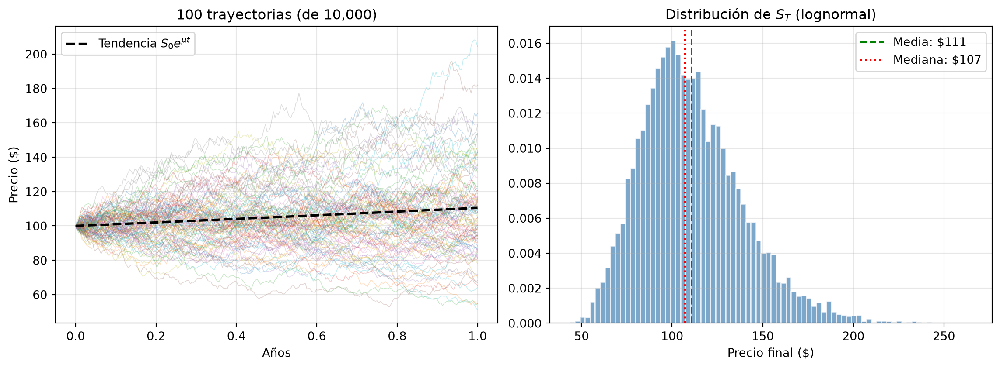
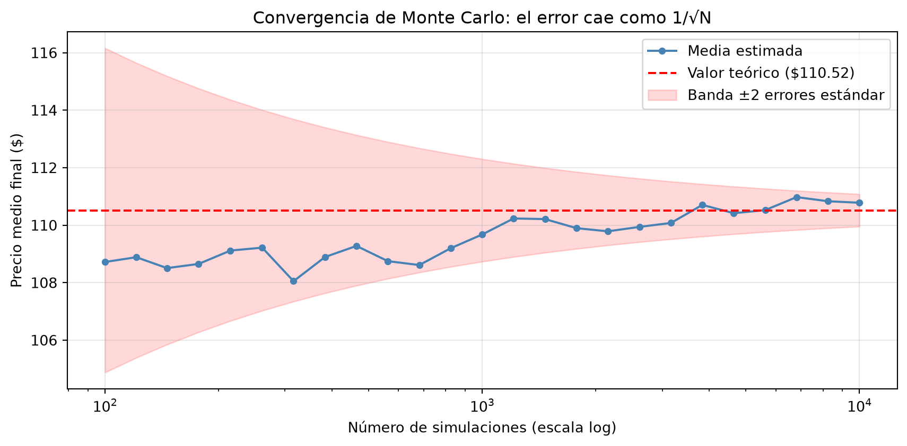

import numpy as np
import matplotlib.pyplot as plt
from scipy import stats
rng = np.random.default_rng(42)13 Capítulo 13: Simulación de Monte Carlo
Movimiento Browniano Geométrico y generación de escenarios
Resumen
Cuando un problema no tiene fórmula cerrada, la simulación de Monte Carlo lo resuelve por fuerza bruta inteligente: generar miles de futuros posibles y estudiar su distribución. Presentamos el Movimiento Browniano Geométrico como modelo canónico del precio de un activo, simulamos trayectorias de forma vectorizada, calculamos VaR y Expected Shortfall por simulación, estudiamos la convergencia del método y lo aceleramos con variables antitéticas. Cerramos valuando una opción, el puente hacia el Módulo 4.
14 Introducción
Hay preguntas financieras que no tienen fórmula: ¿cuál es la distribución del valor de mi cartera en 5 años si rebalanceo cada mes? ¿cuánto vale una opción cuyo pago depende de la trayectoria del precio y no solo del valor final? Para ese tipo de problemas existe el método de Monte Carlo, llamado así por el casino: en lugar de resolver el problema analíticamente, tiramos los dados miles de veces —simulamos miles de futuros posibles— y estudiamos la distribución de resultados.
La receta general tiene tres pasos:
- Modelar la dinámica de la variable incierta (para nosotros: el precio de un activo).
- Simular muchas trayectorias independientes de ese modelo.
- Agregar: estimar lo que nos interese (media, percentiles, probabilidad de un evento) sobre las trayectorias.
El paso 1 exige elegir un modelo del precio. Empezamos por el más importante de todos: el Movimiento Browniano Geométrico.
15 El Movimiento Browniano Geométrico (GBM)
15.1 La idea
¿Cómo modelar el precio de una acción? Dos observaciones empíricas nos guían:
- Los precios tienen una tendencia de largo plazo (el mercado sube “en promedio”).
- Alrededor de esa tendencia hay ruido permanente e impredecible.
El GBM formaliza exactamente eso. En su forma de ecuación diferencial estocástica:
\[\frac{dS}{S} = \mu \, dt + \sigma \, dW\]
Leela por partes: el retorno instantáneo del activo (\(dS/S\)) tiene un componente determinístico \(\mu\,dt\) (el drift, la tendencia) y un componente aleatorio \(\sigma\,dW\) (la difusión: ruido gaussiano escalado por la volatilidad). Es literalmente “tendencia + ruido”.
Para simular necesitamos la versión discreta. Integrando la ecuación (los detalles requieren cálculo estocástico, pero el resultado es lo que importa):
\[S_{t+\Delta t} = S_t \cdot \exp\!\Big[\big(\mu - \tfrac{\sigma^2}{2}\big)\Delta t + \sigma \sqrt{\Delta t} \, Z\Big], \qquad Z \sim N(0,1)\]
Nota¿De dónde sale el −σ²/2?
Ese término sorprende la primera vez. La intuición: la exponencial es convexa, así que el ruido simétrico en el exponente produce resultados asimétricos en el precio (una suba del 10% seguida de una baja del 10% no te devuelve al punto de partida: \(1.1 \times 0.9 = 0.99\)). El término \(-\sigma^2/2\) corrige exactamente ese efecto para que el retorno esperado del precio sea \(\mu\). Sin la corrección, la simulación tendría un sesgo alcista espurio.
Dos propiedades del GBM que conviene tener presentes:
- El precio nunca se hace negativo (es una exponencial) — realista para acciones.
- Los retornos logarítmicos son normales, así que el precio final es lognormal: asimétrico, con una cola larga hacia arriba.
15.2 Simulación vectorizada
Simulamos todas las trayectorias a la vez con una matriz de shocks: filas = pasos de tiempo, columnas = simulaciones. El único bucle recorre el tiempo (cada precio depende del anterior); las 10.000 simulaciones avanzan en paralelo gracias a la vectorización del Capítulo 5.
# Parámetros del activo y de la simulación
S0 = 100 # precio inicial
mu = 0.10 # drift anual (10%)
sigma = 0.25 # volatilidad anual (25%)
T = 1.0 # horizonte: 1 año
n_pasos = 252 # pasos diarios
n_sims = 10_000 # trayectorias
dt = T / n_pasos
# Matriz de shocks: un N(0,1) por paso y por simulación
Z = rng.standard_normal((n_pasos, n_sims))
# Simulación: el bucle recorre el tiempo; las columnas avanzan en paralelo
S = np.empty((n_pasos + 1, n_sims))
S[0] = S0
for t in range(1, n_pasos + 1):
S[t] = S[t-1] * np.exp((mu - 0.5 * sigma**2) * dt + sigma * np.sqrt(dt) * Z[t-1])
print(f"Precio inicial: ${S0:.2f}")
print(f"Precio medio final: ${S[-1].mean():.2f} (teórico: ${S0 * np.exp(mu * T):.2f})")
print(f"Precio mediano final: ${np.median(S[-1]):.2f}")
print(f"Rango simulado: ${S[-1].min():.2f} — ${S[-1].max():.2f}")Precio inicial: $100.00
Precio medio final: $110.78 (teórico: $110.52)
Precio mediano final: $107.23
Rango simulado: $43.61 — $265.43Verificación de cordura: la media simulada coincide con la teórica \(E[S_T] = S_0 e^{\mu T}\). Notá también que la mediana está por debajo de la media: es la asimetría lognormal en acción (unas pocas trayectorias excelentes tiran el promedio hacia arriba).
fig, axes = plt.subplots(1, 2, figsize=(12, 4.5))
# Panel 1: una muestra de trayectorias
ax = axes[0]
tiempo = np.arange(n_pasos + 1) / 252
ax.plot(tiempo, S[:, :100], alpha=0.25, linewidth=0.6)
ax.plot(tiempo, S0 * np.exp(mu * tiempo), "k--", linewidth=2, label="Tendencia $S_0 e^{\\mu t}$")
ax.set_title(f"100 trayectorias (de {n_sims:,})")
ax.set_xlabel("Años")
ax.set_ylabel("Precio ($)")
ax.legend()
ax.grid(True, alpha=0.3)
# Panel 2: distribución de precios finales
ax = axes[1]
ax.hist(S[-1], bins=80, density=True, alpha=0.7, color="steelblue", edgecolor="white")
ax.axvline(S[-1].mean(), color="green", linestyle="--",
label=f"Media: ${S[-1].mean():.0f}")
ax.axvline(np.median(S[-1]), color="red", linestyle=":",
label=f"Mediana: ${np.median(S[-1]):.0f}")
ax.set_title("Distribución de $S_T$ (lognormal)")
ax.set_xlabel("Precio final ($)")
ax.legend()
ax.grid(True, alpha=0.3)
plt.tight_layout()
plt.show()
El panel izquierdo es el “abanico de futuros”: todas las trayectorias arrancan del mismo punto y se dispersan con el tiempo. El derecho resume dónde terminan: la forma asimétrica con cola derecha larga es la distribución lognormal.
16 VaR y Expected Shortfall por Monte Carlo
En el Capítulo 11 calculamos VaR y ES con dos métodos: paramétrico (asume normal) e histórico (usa el pasado). Monte Carlo es el tercer método, y el más flexible: la distribución de pérdidas sale de las trayectorias simuladas, con el modelo que queramos. Hoy el modelo es GBM; en el próximo capítulo será uno con saltos — y el código de abajo no cambia.
valor_portafolio = 10_000_000
retornos_sim = S[-1] / S0 - 1 # retorno de cada trayectoria a 1 año
var_95 = -np.percentile(retornos_sim, 5) * valor_portafolio
umbral = np.percentile(retornos_sim, 5)
es_95 = -retornos_sim[retornos_sim <= umbral].mean() * valor_portafolio
print(f"Sobre un portafolio de ${valor_portafolio/1e6:.0f}M, horizonte 1 año:")
print(f" VaR 95% (Monte Carlo): ${var_95:>12,.0f}")
print(f" ES 95% (Monte Carlo): ${es_95:>12,.0f}")Sobre un portafolio de $10M, horizonte 1 año:
VaR 95% (Monte Carlo): $ 2,921,024
ES 95% (Monte Carlo): $ 3,594,30817 ¿Cuántas simulaciones son suficientes? Convergencia
Monte Carlo da una estimación, no un valor exacto, y su error decrece con la raíz del número de simulaciones: \(\text{error} \propto 1/\sqrt{N}\). Esa raíz es una mala noticia práctica: para ganar un dígito de precisión hay que multiplicar las simulaciones por 100.
ns = np.unique(np.logspace(2, 4, 25).astype(int))
medias = [S[-1, :n].mean() for n in ns]
teorico = S0 * np.exp(mu * T)
# Banda de error teórica: ±2 desvíos del estimador de la media
sd_ST = S[-1].std()
banda = 2 * sd_ST / np.sqrt(ns)
fig, ax = plt.subplots(figsize=(9, 4.5))
ax.plot(ns, medias, "o-", color="steelblue", markersize=4, label="Media estimada")
ax.axhline(teorico, color="red", linestyle="--", label=f"Valor teórico (${teorico:.2f})")
ax.fill_between(ns, teorico - banda, teorico + banda, alpha=0.15, color="red",
label="Banda ±2 errores estándar")
ax.set_xscale("log")
ax.set_xlabel("Número de simulaciones (escala log)")
ax.set_ylabel("Precio medio final ($)")
ax.set_title("Convergencia de Monte Carlo: el error cae como 1/√N")
ax.legend()
ax.grid(True, alpha=0.3)
plt.tight_layout()
plt.show()
La estimación “baila” dentro de la banda teórica y se aquieta a medida que \(N\) crece. Regla práctica: reportá siempre el error estándar de tu estimación Monte Carlo (\(s/\sqrt{N}\)), no solo el número.
17.1 Reducción de varianza: variables antitéticas
¿Se puede lograr más precisión sin más simulaciones? Sí — hay toda una familia de técnicas de reducción de varianza. La más simple y elegante: las variables antitéticas. La idea: por cada shock \(Z\) que uses, usá también \(-Z\). Cada trayectoria “optimista” queda emparejada con su gemela “pesimista”, los errores de ambas se compensan, y el promedio del par es mucho más estable que dos trayectorias independientes.
def precio_final_gbm(Z):
"""Precio final S_T dado un vector de shocks acumulados por trayectoria."""
log_ST = (np.log(S0) + (mu - 0.5 * sigma**2) * T
+ sigma * np.sqrt(dt) * Z.sum(axis=0))
return np.exp(log_ST)
n_pares = n_sims // 2
Z_half = rng.standard_normal((n_pasos, n_pares))
# Método estándar: n_sims trayectorias independientes
ST_std = precio_final_gbm(rng.standard_normal((n_pasos, n_sims)))
# Método antitético: n_pares trayectorias + sus espejos (mismo costo total)
ST_pos = precio_final_gbm(Z_half)
ST_neg = precio_final_gbm(-Z_half)
ST_anti = 0.5 * (ST_pos + ST_neg) # promedio por par
print(f"{'':24}{'Estimación':>12}{'Error estándar':>16}")
print(f"{'Estándar':<24}{ST_std.mean():>12.3f}{ST_std.std()/np.sqrt(n_sims):>16.4f}")
print(f"{'Antitético':<24}{ST_anti.mean():>12.3f}{ST_anti.std()/np.sqrt(n_pares):>16.4f}")
print(f"\nValor teórico: {teorico:.3f}") Estimación Error estándar
Estándar 110.682 0.2817
Antitético 110.449 0.0671
Valor teórico: 110.517Con el mismo costo computacional, el error estándar del método antitético es visiblemente menor. En simulaciones industriales (pricing de exóticos, XVA), estas técnicas marcan la diferencia entre horas y minutos.
18 Puente al Módulo 4: valuar una opción por Monte Carlo
Cerremos con el uso más famoso de Monte Carlo en finanzas. Una call europea da derecho a comprar el activo a precio \(K\) en la fecha \(T\); su pago final es \(\max(S_T - K, 0)\). Bajo valuación neutral al riesgo (lo desarrollamos en el Capítulo 18), su precio es el pago esperado descontado, simulando con drift igual a la tasa libre de riesgo \(r\):
\[C = e^{-rT} \cdot E\big[\max(S_T - K, 0)\big]\]
r = 0.05 # tasa libre de riesgo
K = 105 # strike
# Simulamos S_T con drift r (mundo neutral al riesgo)
Z_rn = rng.standard_normal(200_000)
ST_rn = S0 * np.exp((r - 0.5 * sigma**2) * T + sigma * np.sqrt(T) * Z_rn)
payoff = np.maximum(ST_rn - K, 0)
precio_mc = np.exp(-r * T) * payoff.mean()
error_mc = np.exp(-r * T) * payoff.std() / np.sqrt(len(payoff))
# Comparación con la fórmula cerrada de Black-Scholes
d1 = (np.log(S0/K) + (r + 0.5*sigma**2)*T) / (sigma*np.sqrt(T))
d2 = d1 - sigma*np.sqrt(T)
precio_bs = S0 * stats.norm.cdf(d1) - K * np.exp(-r*T) * stats.norm.cdf(d2)
print(f"Precio call por Monte Carlo: ${precio_mc:.3f} ± {2*error_mc:.3f}")
print(f"Precio call Black-Scholes: ${precio_bs:.3f}")Precio call por Monte Carlo: $9.954 ± 0.076
Precio call Black-Scholes: $10.002La simulación reproduce la fórmula cerrada — y esa es justamente la gracia: para una call europea Black-Scholes ya existe, pero para opciones path-dependent (asiáticas, barrera) o con modelos más ricos que el GBM, la fórmula no existe y Monte Carlo es el camino. Volveremos sobre esto en el Módulo 4.
19 Errores comunes
AdvertenciaTrampas frecuentes
- Olvidar el término \(-\sigma^2/2\) en el exponente: infla sistemáticamente los precios simulados.
- Confundir mundo real y mundo neutral al riesgo: para proyectar escenarios usá el drift real \(\mu\); para valuar derivados usá \(r\). Mezclarlos da precios de opciones sin sentido.
- Reportar la estimación sin su error estándar: dos corridas con semillas distintas pueden diferir; el error estándar te dice cuánto es esperable.
- Reusar los mismos shocks para todo: si comparás dos estrategias, simulalas sobre los mismos shocks (para aislar la diferencia) — pero si estimás la incertidumbre, necesitás muestras independientes. Saber cuál corresponde a cada caso es parte del oficio.
- Escalar mal el tiempo: \(\sigma\) anual con pasos diarios exige \(\sqrt{\Delta t} = \sqrt{1/252}\) en el ruido. Un \(\Delta t\) inconsistente distorsiona toda la dinámica.
20 Ejercicios Propuestos
ImportanteEjercicios
- Sensibilidad a la volatilidad: simulá con \(\sigma \in \{15\%, 25\%, 50\%\}\) y superponé las tres distribuciones de \(S_T\). ¿Qué pasa con la mediana a medida que sube \(\sigma\), aun con el mismo \(\mu\)?
- Probabilidad de pérdida: con las trayectorias del capítulo, estimá \(P(S_T < S_0)\) y comparala con la fórmula teórica lognormal.
- Activos correlacionados: simulá 2 activos con correlación \(\rho = 0.7\) usando la descomposición de Cholesky de la matriz de correlación, y verificá la correlación empírica de los retornos simulados.
- Put europea: valuá una put con \(K = 95\) por Monte Carlo y verificá la paridad put-call: \(C - P = S_0 - Ke^{-rT}\).
- Opción asiática: valuá una call asiática (el payoff usa el promedio de la trayectoria: \(\max(\bar{S} - K, 0)\)). ¿Por qué acá Monte Carlo es imprescindible?
21 Referencias
- Glasserman, P. (2003). Monte Carlo Methods in Financial Engineering. Springer.
- Hull, J. (2018). Options, Futures, and Other Derivatives. Pearson.
- Boyle, P. (1977). Options: A Monte Carlo Approach. Journal of Financial Economics, 4(3), 323–338.